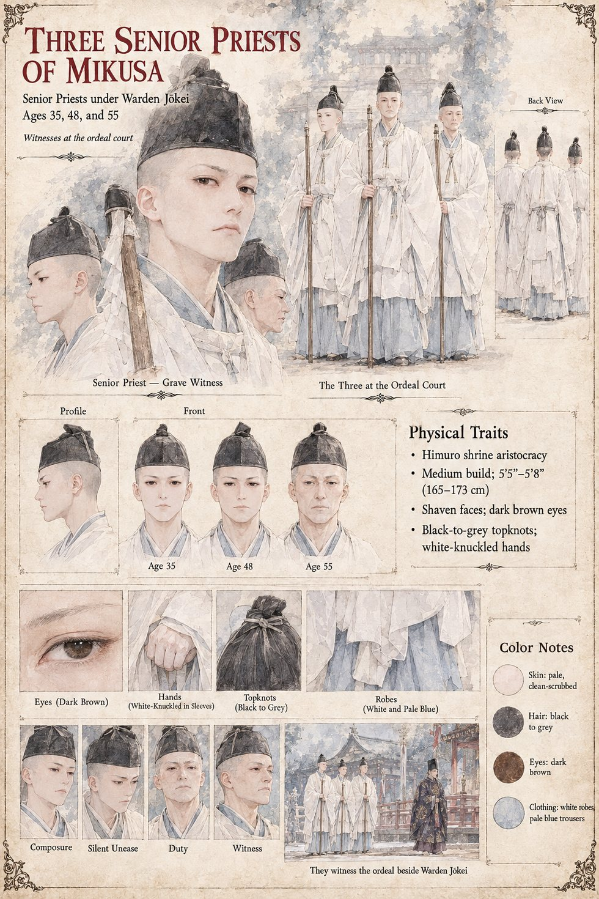

The Three Senior Priests of Mikusa
Senior priests under Warden Jōkei · witnesses at the ordeal court · 35, 48 and 55 by their sheet
Warden Jōkei of Mikusa has a staff and a ledger, and among his priests three seniors, who sit with him in their white robes among the nine witnesses on the morning the Captain of the Left Gate Guard is brought to the Stone: the two officers of the Bureau of Inquiry, Jōkei and his three senior priests, the boy who carried the lantern, the Right Minister, and the Minister of the Left. What the nine see is argued over for the rest of their lives, and each account is slightly different and each sincere: a pale grain pouring sideways into the stone, and a sound that two of them call a bowl being set down on a table and one a breath let out.
None of the three is named, aged or given a line, and the manuscript does not say which of the witnesses gave which account. When Sukenori is brought to the same dais in the second winter of the Rising, of the nine witnesses of that morning only three are left to see him, “the others having been taken by the Law, or the Rising, or the plain exhaustion of men who have been present at something”; it does not say which three. The sheet supplies the rest: ages of 35, 48 and 55, shaven faces, black-to-grey topknots, white-knuckled hands in their sleeves, the pale blue trousers under the white robes, and the shrine staffs they carry. The white robes are the manuscript's; the figures and the faces are the sheet's own.
Appears In

Related Subjects


Related Records

At the grey of dawn on the twentieth of Garren, Tomobe no Higaide sets his left palm on the Stone of Mikusa and goes into it as pale grain, in the sight of Jōkei, his three senior priests and a Minister with Azuki curled in the fold of his sleeve.